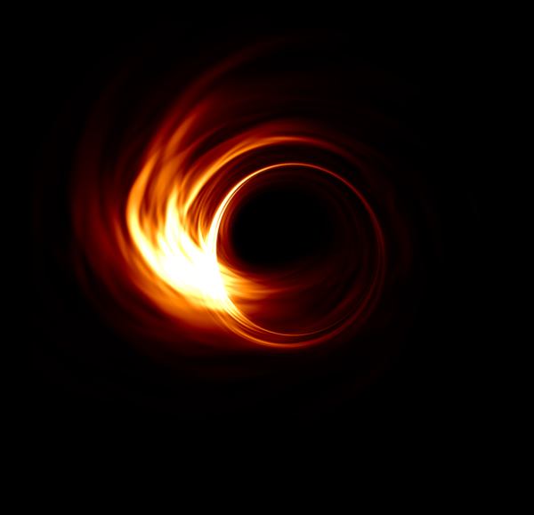

Home
Experimental physics today relies on huge international collaborations, built by thousands of scientists over multiple decades. These massive engineering projects are pushing the limits of modern technology to probe the universe with unimaginable precision. As a couple of passionate graduate students, we decided to build this website to present an accessible calendar of major upcoming milestones for some of humanity's biggest and most awe-inspiring projects.
We're still under construction, so not everything is up here yet!
Schedule
| Project | Description | Next Big Event | Date | |
|---|---|---|---|---|
|  | EHT | The Event Horizon Telescope (EHT) is an international collaboration aiming to capture the first image of a black hole by creating a virtual Earth-sized telescope | first results | soon! |

| LIGO | The Laser Interferometer Gravitational-wave Observatory (LIGO) detected gravitational waves directly for the first time in history on September 14, 2015. In 2017 it made history again by detecting a binary neutron star merger for the first time. LIGO is currently being upgraded to Advanced Ligo, which will be about a factor of two more sensitive. We can't wait to see what it will find next! | Run 3 | early 2019 |

| LHC | The Large Hadron Collider (ATLAS, CMS, etc) | what's next? | who knows |

| KAGRA | The Kamioka Gravitational wave detector (KAGRA) is Japan's contribution to the exciting new field of gravitational wave astronomy. It will join the LIGO-Virgo collaboration around 2020. | First Run | 2020 |

| JWST | The James Webb Space Telescope (JWST) is the premier next-gen space observatory, with a 6.5m infrared telescope. | Launch | 2021 |
| SPACEX | Elon Musk is a man on a mission. Will he succeed in his ultimate quest to make humankind a multi-planetary species? We'll have to find out! Before a manned mission, they will send at least one unmanned probe to test the technology and deliver a payload to the Martian surface. | Red Dragon: unmanned Mars probe | early 2020's | |

| LSST | The Large Synoptic Survey Telescope (LSST) in Chile will compile the largest public data set in the world. Probing the nature of dark matter, dark enery, and more. | Full science operations | 2023 |
| ITER | The world's largest nuclear fusion reactor, ITER, is currently being built in southern France. It will use a tokamak powered by superconducting magnets to fuse a plasma of Deutrerium and Tritium into Helium. The ITER team hopes to create the first net-positive energy fusion reactor, and unlock a new form of energy production for humanity. | First plasma | 2025 | |

| DUNE | The Deep Underground Neutrino Experiment (DUNE) will consist of two neutrino detectors placed in the world’s most intense neutrino beam. One near the source of the beam at FermiLab, and a second, much larger detector more than a kilometer underground at the Sanford Underground Research Laboratory in South Dakota — 1,300 kilometers downstream of the source. These detectors will enable scientists to search for new subatomic phenomena and potentially transform our understanding of neutrinos and their role in the universe. | Neutrino beam operational | 2026 |

| LISA | The Laser Interferometer Space Antenna (LISA) is a space-based observatory composed of three spacecraft in an equilateral triangle 1 million miles on each side. It will be able to detect gravitational waves of longer wavelength than LIGO, probing super-massive black hole mergers and extreme mass ratio inspirals. | Launch | approx 2034 |
Last updated: 2018.07.06